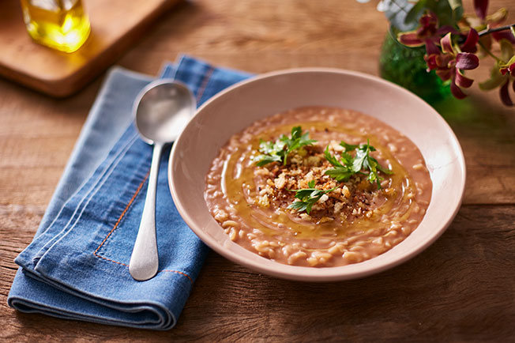

A sopa de feijão combina com o almoço ou jantar. Nesta versão, o espaguete é usado para dar uma incrementada na
receita, mas você pode usar o macarrão de sua preferência. Confira como fazer!

Ingredientes
1 1/2 xícara (255 g) de feijão-carioca
4 litros de água
250 g de espaguete (massa seca)
5 colheres (sopa) (75 ml) de óleo de girassol
100 g de cebola picada
sal a gosto
Passo a Passo
1) Numa panela, cozinhe o feijão em 2 litros de água por 20 minutos, ou até ficar macio.
2) Transfira para o liquidificador com a água do cozimento, bata até homogeneizar,
passe numa peneira e reserve.
3) Em outra panela, ferva a água restante com sal, cozinhe o espaguete por 7 minutos e escorra.
4) Em outra panela, aqueça o óleo e refogue a cebola por 3 minutos.
5) Junte o feijão batido e deixe ferver por mais 3 minutos.
6) Acrescente o espaguete, misture e tempere com sal a gosto.
7) Sirva em seguida.